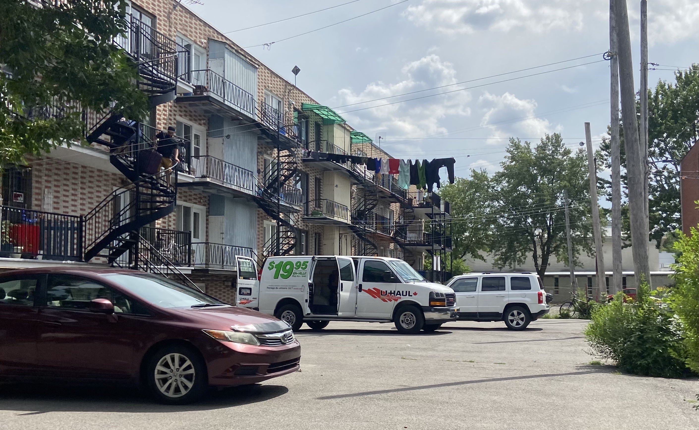
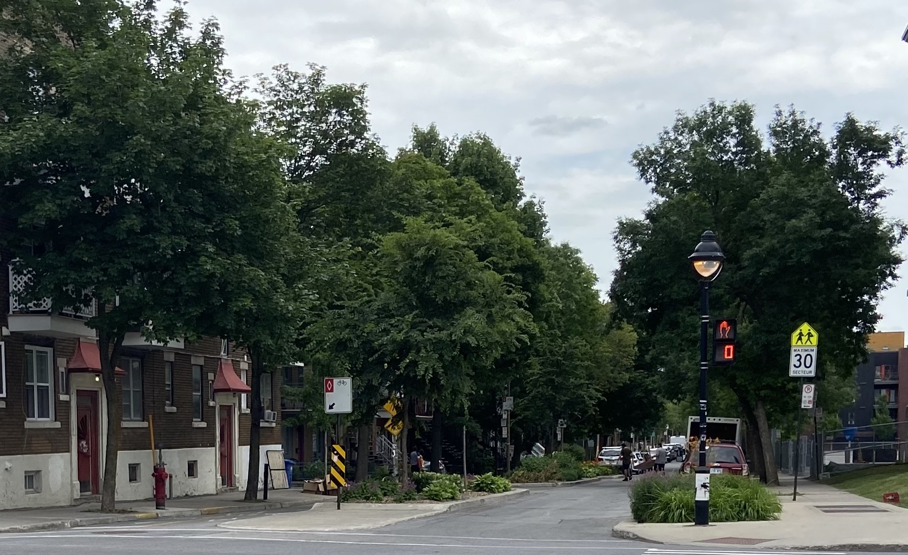
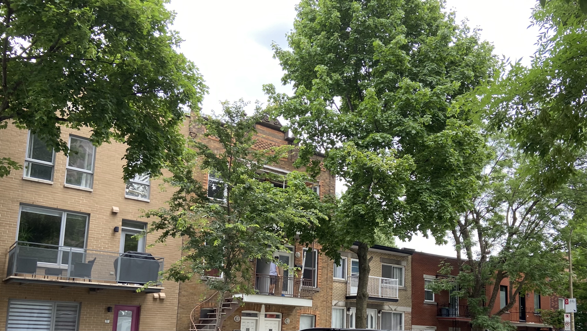
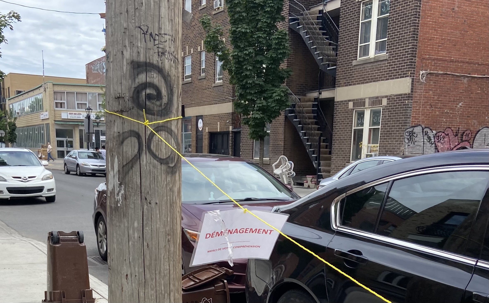
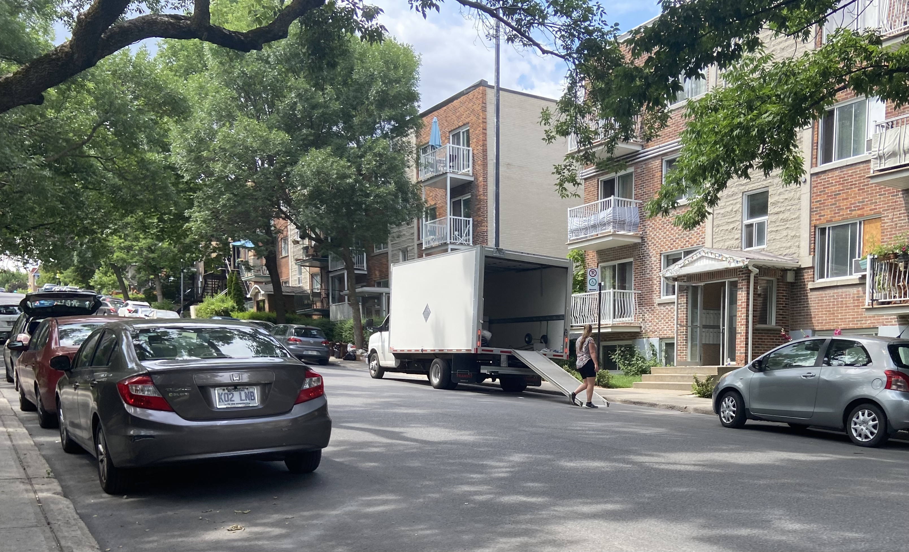
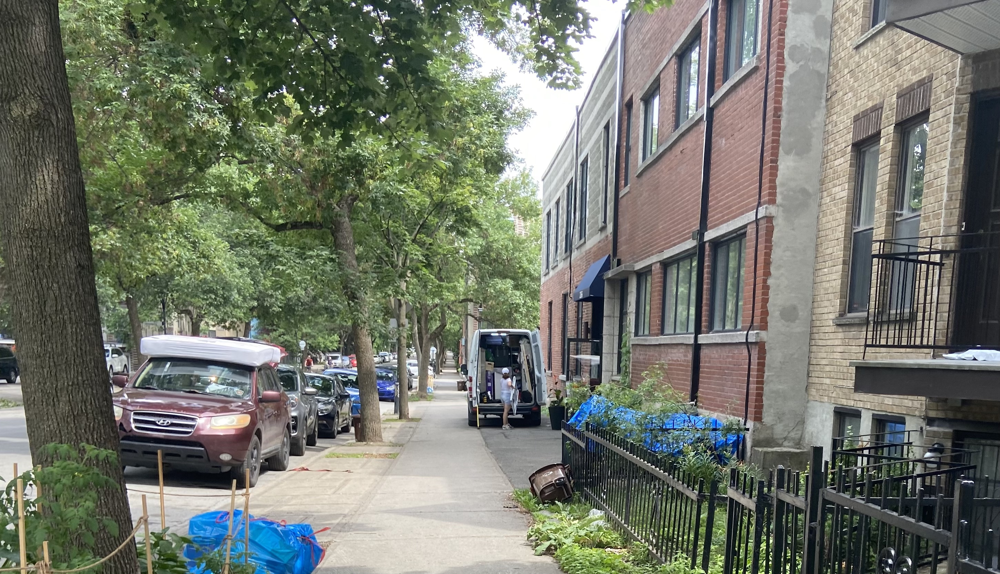
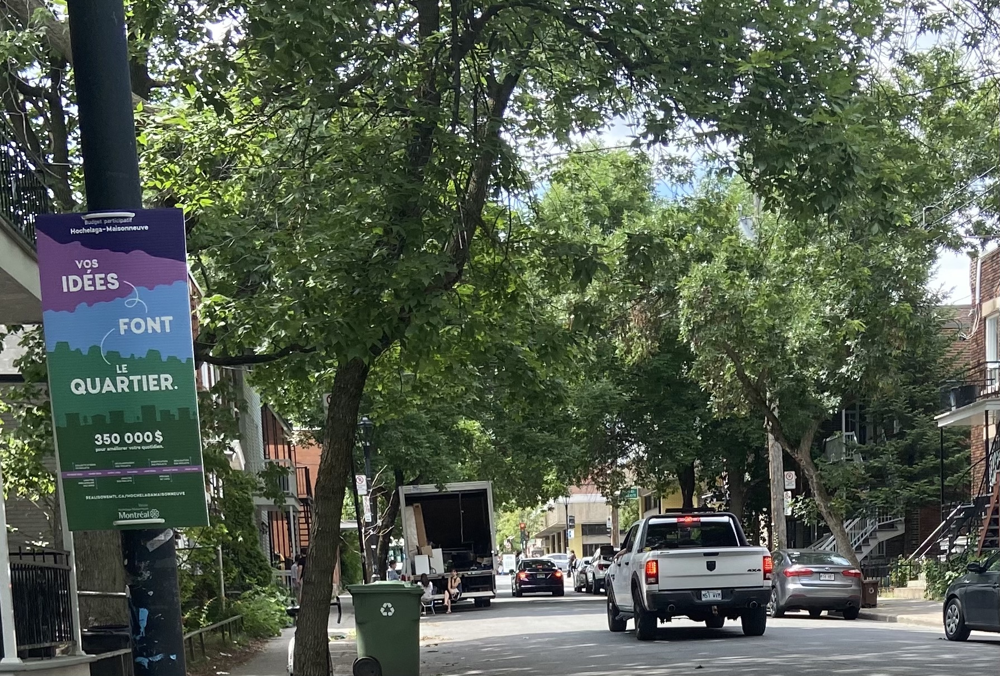

Movers carry suitcases to an awaiting U-Haul in the parking lot of a building on St-Germain Street in the Hochelaga-Maisonneuve borough on July 1, 2021. Photo credit: Gwen Roley
The face of Montreal’s Hochelaga-Maisonneuve borough is changing. That is what Odélie Joly, a community organizer at the Comité Bails Hochelaga-Maisonneuve, has to say about the neighbourhood her housing advocacy organization serves. The Comité Bails Hochelaga-Maisonneuve is a collection of citizens that works to defend the rights of those in precarious housing situations and to put pressure on the government to increase the amount of social housing in the city. Joly has worked with the group since 2007 and said that over the past 14 years she has seen new types of businesses move in that have attracted a richer demographic of renters to the neighbourhood.
“It’s not that people in the neighbourhood are getting richer,” Joly said. “It’s that the poor people in the neighbourhood have moved.”
She said as wealthier people have moved in, the social services traditionally used by people in the neighbourhood have dwindled. The example she used was school breakfast programs, the need for which is determined by the income bracket of the families in a school’s district. Since the neighbourhood’s income brackets have been going up, she has seen many of those breakfast programs eliminated.
“And I’m not talking about very, very rich people. It’s really middle-class, upper-middle-class people,” she said. “Now that the price of housing and condos is rising, it’s sure that we will be getting more rich people here.”
Between 2015 and 2019, the average monthly rent in Hochelaga-Maisonneuve rose 9.16 per cent, from $684 per month in 2015 to $753 per month in 2019, according to the Canadian Mortgage and Housing Corporation (CMHC).
As is the case across the province of Quebec every year, on July 1, 2021 was shaken up by “Moving Day,” the day most annual leases in Quebec expire and many people change apartments. Below follows a series of photos taken in Hochelaga-Maisonneuve on moving day this year.

Movers carry a piece of furniture across Desjardins Avenue in the Hochelaga-Maisonneuve borough on July 1, 2021. Photo credit: Gwen Roley.

A door taken off its hinges to allow room to move furniture into an apartment on Desjardins Avenue in the Hochelaga-Maisonneuve borough on July 1 2021. Photo credit: Gwen Roley.
Discarded furniture in front of a "For Sale" sign on Desjardins Avenue in the Hochelaga-Maisonneuve borough on July 1, 2021. Photo credit: Gwen Roley.
Movers throw out disused appliances on Desjardins Avenue in the Hochelaga-Maisonneuve borough on July 1, 2021. Photo credit: Gwen Roley.
Apartments under construction on Ontario Street in the Hochelaga-Maisonneuve borough on July 1, 2021. Photo credit: Gwen Roley.
Discarded items thrown out around a donation box marked "This is not a trashcan" on Ontario Street in the Hochelaga-Maisonneuve borough on July 1, 2021. Photo credit: Gwen Roley.
A couch propped in the entryway of a porch on d'Orléans Avenue in the Hochelaga-Maisonneuve borough on July 1, 2021. Photo credit: Gwen Roley.
An advertisement for newly renovated condos on d'Orléans Avenue in the Hochelaga-Maisonneuve borough on July 1, 2021. Photo credit: Gwen Roley.
Discarded furniture and house items in front of a "For Sale" sign on Bourbonnière Avenue in the Hochelaga-Maisonneuve borough on July 1, 2021. Photo credit: Gwen Roley.

A sign put up meant to block off parking to allow a space for movers on Nicolet Street in the Hochelaga-Maisonneuve borough on July 1, 2021. Photo credit: Gwen Roley.
Discarded furniture and house items on Chambly Street in the Hochelaga-Maisonneuve borough on July 1, 2021. Photo credit: Gwen Roley.
An apartment for rent is advertised on Aylwin Street in the Hochelaga-Maisonneuve borough on July 1, 2021. Photo credit: Gwen Roley.

Items are unloaded from a moving truck in front of an apartment building on Davidson Street in the Hochelaga-Maisonneuve borough on July 1, 2021. Photo credit: Gwen Roley.

A mover unloads items from a van in front of a building on St-Germain Street in the Hochelaga-Maisonneuve borough on July 1, 2021. Photo credit: Gwen Roley.

Movers take a rest while unloading in front of an apartment on Joliette Street in the Hochelaga-Maisonneuve borough on July 1, 2021. Photo credit: Gwen Roley.